The Two Handed Backhand:¶
Hitting Stances¶
John Yandell¶
In the last article we looked at the preparation and the backswings on the two-handed backhand.(link.) We saw how the players used a body turn to initiate the preparation. We saw the high speed footage reveals that the loop back swing is an illusion, and that virtually all players start straight back and keep their hands quite low throughout the preparation.
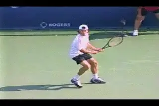
Neutral, Open, and Closed. 3 stances, but which stance when?
Now let's see how the top players complete the set up and examine the variety of possible hitting stances. Let' see what good players have in common, and when they use which stance. Then in the next article we'll take a close look at the forward swing, the contact, the finish and the wrap.
Stances
It's well accepted that the modern forehand is hit primarily with an Open Stance, although it can also be hit with a Neutral Stance, typically if the ball is low or the player is stepping in to pick the ball up on the rise. On the forehand you just don't see the Closed Stance, with the player stepping across the line of the shot on a diagonal.
Unlike the forehand the two-hander can be hit Closed Stance, with a substantial diagonal cross step.
That's not the case with the two-hander. As with the forehand, the top players use both the Open Stance and the Netural Stance. But you will regularly see them hit Closed Stance as well, making a diagonal cross step to the ball. This cross step can be surprisingly large, up to two or even three times shoulder width.
The Closed Stance is most common when the players are wide in the court. But, interestingly, you can see players use any of the three stances from almost anywhere in the court. It's another way in which the two-handed backhand turns out to be more complex than is generally believed.
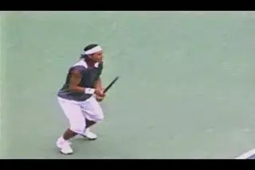
The use of the stances can vary drastically with players stepping into very high balls and hitting open in the center of the court.
Is there a key to understanding when a player choses a certain stance? The hitting stance can be influenced in some cases by grips, as we'll see below. You might also think that in general players would hit more high balls Open Stance, and tend to hit low balls and short balls either Neutral or Closed. Statistically, that is probably true. But what is interesting is how the players will mix the stances in unexpected ways. You can find examples of very high balls hit with Closed Stances. Some players will hit Open Stance on balls around the center of the court where they could clearly step in, and do the same even on lower balls where you would expect them to step across.
The stances seem to have a wide degree of flexibility, and with some players it seems to be almost a matter of personal preference in which they chose to hit with a certain stance on a certain ball. Sometimes on an almost identical ball, you'll see one player hit open while another player will step in. So let's look in detail at the options. But before we do, it probably a good idea to clarify our terms. When we say there are three stances: Netural, Open and Closed, what exactly do we mean?
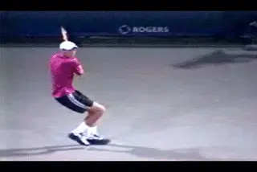
Netural Stance is often hit with a reverse pivot, as well as a step out and body turn.
Neutral Stance
By [Neutral Stance (which is also sometimes called the Square Stance)] we mean basically that the front foot and the back foot are in line at the time of the step to the ball. With the Neutral Stance the player has stepped into the shot with the front foot, stepping forward and basically in the direction in which the ball will travel. If you drew a line along the tips of the player's toes, that line would be perpendicular to the baseline, or just slightly across, or sometimes on a slight diagonal parallel to the target line of the shot.
The Neutral Stance is most often hit around the center of the court. It's common when the player reverse pivots on the turn move, stepping away from the ball first with the back foot to initiate the set up. This happens when the ball comes more or less directly at the player, sometimes for example after he hits a serve and prepares to hit his first groundstroke off the return. But you often see players set up in the Neutral Stance with a normal body turn and no the reverse steps. You can see that in the center, but just as easily you can find it from wider positions on the court.
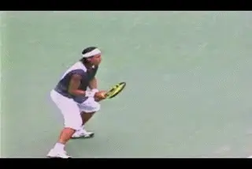
Players will use Open Stance on balls anywhere in the court at different contact heights
Open Stance
By Open Stance we mean that the player does not step forward into the shot with the front foot. The outside or left foot stays closest to the ball. [With the Open Stance, there can be variations in degree. The right foot can stay all the way on the right side or it can come somewhat more forward and/or across. But it never crosses over and the player never plants significant weight on it during the swing.]
[You see the Open Stance most often when the players are wide in the court or on the run.] But you can see it in the center as well. Some players like Elena Dementieva seem to hit a majority of their backhands with an Open Stance, even when they appear to have plenty of time could easily step in. A player like Venus Williams hits almost exclusively with open stance. In her case it's not a matter of preference. Her stance is dictated by factors having to do with her grip and hitting arms as we discovered in a previous article. (link.)
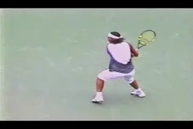
The Cross Step is common and can reach 2 or even 3 shoulder lengths.
Closed Stance
One of the most surprising things I found in reviewing the high speed footage was just how many two-handed shots the players hit from radically closed stances. We're not talking about a small adjustment in the relative angle and spacing of the feet. We are talking about a decisive diagonal step across the body. Sometimes this cross step can appear almost gigantic. It's quite common for players like Davydenko to take a cross step that is two or even sometimes three shoulder widths in length. You'll see the Closed Stance when players are wider in the court, but usually not under extreme pressure or on the run. But with some players you can also see it on very wide balls or running balls when you might expect to see Open Stance.
[Why the Closed Stance? It appears to be related to the use of the hitting arms in the two-handed shot.] One of the things we found in our assessment of the hitting arm positions (link) was that for most two-handers the front arm was much more involved in generating the shot than many coaches believed, myself included. This use of the front arm in some respects makes the shot similar to the one handed backhand. And the footage shows that we also commonly see the Closed Stance on the one-hander. Why?
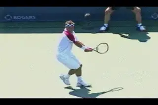
Because of the role of the front arm, the rotation of the torso on the two-hander can be closer to a one-handed backhand than a forehand.
If we look at the role of torso rotation we can start to understand why the Closed Stance is viable on the backhand side. The Closed Stance isn't used on the forehand for the obvious reason that it blocks the torso rotation, particularly with the more extreme grips. Players with extreme grips often look awkward trying to step in, or have to leave the court with the front foot at a certain point in the swing as the torso comes around. The one handed backhand has far less rotation. The great one-handers stay sideways with the torso to a much greater to degree. At most they appear to open up 30 to 45 degrees, and on some balls the torso stays almost perpendicular to the net.
We know that most two handers players use some version of a mild one-handed backhand grip with the bottom hand. The pattern of the torso rotation is also somewhat similar to the one-hander. In general the two handers rotate the shoulders about 45 degrees maybe up to 60 degrees to the contact point, with the hips rotating even less. This can even be true when they hit open stance, though you will also see them open up more. But the pattern of torso rotation is in most cases closer to the one-handed backhand than to the forehand.
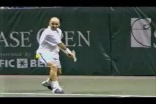
On most balls at contact, the amount body rotation on the two hander is somewhere between the forehand and the one handed backhand.
If you look at the position of the hips, many two handers never square the hips fully to the net, even by the time the racket reachs the followthrough, for example, Nikolay Davydenko and David Nalbandian. Some top two-handers actually make contact with the front arm essentially straight, the same hitting position as on a one-handed backhand drive, an even closer similarity between the shots. The two best examples are Andre Agassi and Rafael Nadal. Other, like Marat Safin or Dementieva are close, with their front arm only slightly bent.
The reduced rotation also makes sense for yet another reason. The grips two-handers typically use with the top hand are conservative compared to their forehands. Typically they are eastern, or shifted slightly one way or the other, toward a mild continental or a mild semi-western. As we saw in our forehand analysis, there is a general tendency for less torso rotation with the more conservative grips.(link.)
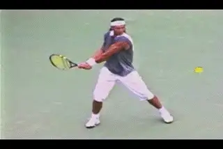
Nadal: another player with both arms virtually straight.
As noted, with the two-hander he alignment of the shoulders is usually 45 degrees or at most 60 degrees to the baseline at contact. Contrast this to the more extreme forehands where the torso is frequently wide open.
Interestingly, the one two-handed player who virtually never hits from the Neutral or Closed Stance is Venus Williams. Venus makes a very limited grip change with the bottom hand. It can't really be called a backhand grip. It's something more like an old style eastern forehand. It's not a coincidence that she hits most of her backhands from an extreme open stance and never cross steps with the front foot. Or that her shoulder position is generally much more open at contact.
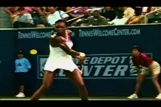
The Venus variation: no real backhand grip, less use of the front arm, open stance, more shoulder rotation at contact.
So it appears there is some correlation between the grip, the use of the right arm and the stance in both the one hander and two hander. Possibly there is actually some technical advantage to the closed stance on some balls with the two-hander. Maybe it controls or limits the amount of torso rotation. But even if there is no clear positive advantage, the least we could say is that the stance is widespread, acceptable and effective.
This means that a complete two handed player has to develop the ability to hit from all three stances, and then, learn how and when to vary them depending on the circumstances. It's probably true that most players will hit Netural Stance when they reverse pivot in the center of the court. It's probably true that most two handers will hit Open Stance on very high balls. And that they will tend to hit with Closed Stance when the ball is low or short in front of them. But there are also plenty of balls, maybe even a majority of balls where there is a choice. In these cases it may be less a matter of which stance is "better" than which stance allows the player to establish a balanced hitting position most quickly given his position in the court relative to the ball he is about to hit. Or maybe it's just preference--or some hidden factor we just haven't discovered.
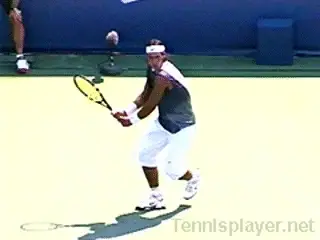
Press Play. Nadal: 3 balls, 3 different stances.
Developing the Stances
When we compare the three stances there is one commonality that stands out however. This is the posture of the players. Open, Neutral or Closed, the torso alignment is remarkably similar. On the vast majority of balls, the players stand almost perfectly upright. They may lean slight forward and dip the left shoulder slightly at the start of the forward swing. One shoulder or the other may be slightly higher at contact reflecting the relative dominance of the arms. (link.) But relatively speaking the stand quite erect. Thee one thing they don't do is bend over to the side toward the ball.
This is true or even especially true on the balls hit from a Closed Stance. Notice how upright the torso stays and how it is perfectly centered between his feet. You can see the same thing in the other stances even if it doesn't look as dramatic.
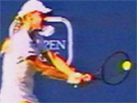
Great posture is a commonality across the stances.
The problem so many recreational players face--and I've seen the same thing by the way in players in the top hundred in the world, is that they don't set up correctly, and end up chasing the ball with the front foot. The key is the same principal Bob Hansen talks about in his seminal articles on footwork.(link.) It's the same thing Kerry Mitchell discusses in detail in looking at the stances on the forehand. (link.) This is the set up with outside foot, or the foot closest to the ball.
So how should you procede if you want to develop this same kind of great balance and alignment? Well, don't run out there, set up the widest Closed Stance possible, and tell yourself that you ARE Nikolay Davydenko. What you need to do is develop the principles of alignment that are common in all the stances and this means progressing from the simpler to the more difficult.
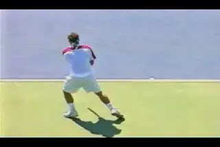
The key to all stances, alignment behind the ball.
In my opinion this means learning two things first. One is how to set up behind the ball on the outside or left foot, control your momentum and establish beautiful upright posture. The second is the develop the Neutral Stance. This means the ability to align yourself behind the flight of the on coming ball, in the full turn position. From this position, you can then step forward into the line of the shot--a little more forward to go down the line, a little more on the diagonal to go crosscourt.
What's next? Learn the Open Stance. In fact once you have developed a feel for the Neutral Stance you can actually work on them simultaneously going back and forth. Developing your ability to hit Open Stance will actually force you to develop better alignment behind the flight of the oncoming ball. This will make your Netural Stance backhand better.
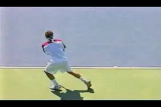
After the Neutral Stance, the next variation is Open.
But I think it's a mistake to do it the other way around. Players who try to learn the Open Stance first often end up overrotating the body and don't really hit through the ball the way they may be capable of doing.
The exception would be players who have hit the two-hander for a long time with poor alignment, either from a Neutral and/or a Closed Stance. Kerry's article makes the point on the forehand. Many recreational players "chase" the ball with the front foot. They stop too far away, don't align behind the ball, and then reach or stretch with the step with the front foot. We talked above about the impeccable upright posture of the top players--that's impossible if the step with the front foot comes from too far away. For a player with this problem, working on the open stance is the solution to feeling how to really get behind the ball, and how to develop great posture.
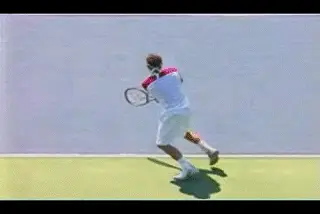
To be complete add the Closed Stance as the third option.
As for the Closed Stance? My own feeling is that it's the third option to develop. The idea should always be back foot alignment to the flight of the oncoming ball. Sometimes that is simply not possible, and that's when it's necessary to take the diagonal step. The interesting thing with the top players however, is what they look like just prior to that Closed Stance step. They establish the rear foot position, typically with a knee bend that is as deep or close to as deep as a set up behind the ball. Their posture is as good as with either of the other two stances. Compare this to the average player who comes crashing through the hit with a big step with the front foot--and often just keeps right on going off the court and out of the point.
As you develop your ability to hit Closed Stance, do a simple test. Find out how wide you can step on the diagonal and still stay straight up and down at the waist. We can't all be Davydenko. The guy is just phenomenally strong and also really flexible, and these qualities allow him to set up in the ultra wide closed stance and still have perfect posture.
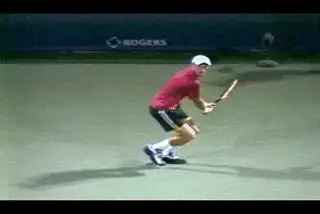
Test how wide you can really get on the Closed Stance. you probably aren't Davydenko.
The Jump Backhand
But wait, aren't I forgetting the new most fashionable stance on the two-hander? I mean the "Air Stance" for want of a better term. This is the leaping backhand in which the players elevate and raise the rear leg and especially the rear knee to go up to the ball? The interesting thing is the set up is the reverse of what you might expect. Watch Nalbandian in the animation. On all the other stances we've looked at, the loading is on the left, or outside leg. The player coils with the weight on the outside leg and a deep knee bend.
You might think with the way the left leg comes up, the same is true in the Air Stance, only more so. Actually it's the opposite. The players are raising the rear leg and particularly the rear knee upward, that's for certain, but the video shows that part of the move appears to be coming from the hip joint, not the ground reaction forces resulting from the knee bend. It's more of a pull upwards.
The real loading is on the other foot. Watch the sequence. Nalbandian first raises the rear leg with very little push off the court. The real push happens after the rear leg is already on the way up. The elevation comes from the uncoiling of the right front leg, but interestingly, the knee bend there isn't as deep as we might suspect.
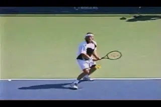
The loading appears to be reversed on the jumping backhand.
It's amazing how high in the air he really gets. And that's the point of the stance--it's a way to control the contact height and keep balls in the strike zone by elevating the entire body to the level of a high bouncing ball.
Not sure if in our subscriber base we have too many players who are ready to try it, but it's causing a lot of commentary and stir. My recommendation is: don't try this at home--and if you disregard my suggestion, don't blame TPA if something bad happens. But it's very interesting at a minimum to see what is actually going on !
So that's it for the stances on the two-hander. Next we'll take a look at the forward path of the racket, the extension, the finish and the wrap. Stay Tuned!

John Yandell is widely acknowledged as one of the leading videographers and students of the modern game of professional tennis. His high speed filming for Advanced Tennis and TPA have provided new visual resources that have changed the way the game is studied and understood by both players and coaches. He has done personal video analysis for hundreds of high level competitive players, including Justine Henin-Hardenne, Taylor Dent and John McEnroe, among others.
In addition to his role as Editor of TPA he is the author of the critically acclaimed book Visual Tennis. The John Yandell Tennis School is located in San Francisco, California.
← Hand and Arm Rotation | Advanced Tennis Index | Preparation and Backswing →